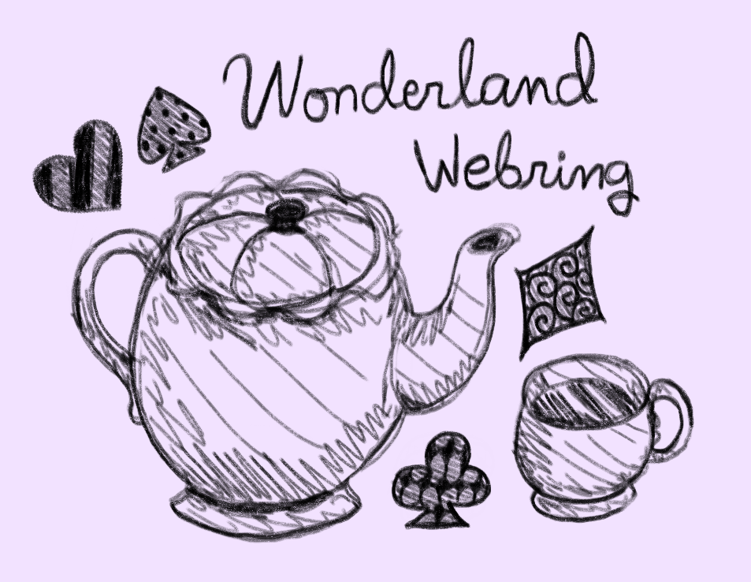

The Wonderland Webring is for adult fans of Twisted Wonderland, created using Onionring.js. You may view the code on the webring owner's GitHub.
This is the official end-of-life announcement for the Wonderland Webring.
Thank you to everyone who joined! It was fun when I made it, but I don't have time for fandom projects anymore.
I have no plans of relinquishing the Wonderland Web name. I think it would only create an opportunity for bad actors to impersonate me acting out of character.
That aside, please feel free to use the HTML as a base/skeleton for any of your own projects! No credit necessary, it's the most basic design ever LOL. I don't own the color light blue or Alice In Wonderland iconography so you are free to take whatever. You can use/modify the member criteria section I wrote as well.
The webring JavaScript is onionring, not mine.
Thanks! --Sunday (besobutler)
You are welcome to join the Wonderland Webring if you are …
Nonnegotiable: Minors and anti-shippers are not welcome to join.
Besides that, all kinds of TWST fans are welcome to join! There is no specific topic/theme (BL, GL, Yume, AUs, Canon, SFW, NSFW, taboo, wholesome, etc) or fanwork medium (fanfiction, fanart, dolls, cosplay, etc.) for this webring.
Is it okay if …
my website is a work in progress?Yes, as long as you have a functional site. That is, the domain you give me cannot point to a 404 error page. A bare-bones website with a "This website is a WIP! Stay tuned for future updates," is perfectly fine. For example, you can apply with a published-WIP site and update it later if you want!
my website content is multi-fandom?Yes, as long as one of those fandoms is TWST.
my website content is not-safe-for-work?Yes. Likewise, you are not obligated to create NSFW content in order to join.
Closed forever as of July 25, 2026.